位于主界面左侧的是模板栏，如左下图：
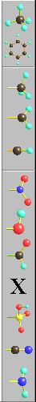 |
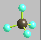 这个按钮用于在工作区内新建一个甲烷分子。〈三维分子模型〉的搭建机制是这样的：首先在工作区内放置一个甲烷分子（或者苯分子），然后选取 该分子上的一个氢原子（被选中的对象是白颜色的），要选中你希望连接的方 向上的氢原子。然后点击模板栏中希望连接的官能团就可以了。（除了甲烷 分子是不能连接的外，其他的按钮代表的官能团都是可以连接的） |
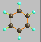 这个按钮用于在工作区内新建一个苯分子或是从选中的一个氢原子所处于的方向上连接出一个苯环。 |
|
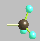 该按钮用于在工作区内从选中的氢原子所处于的方向上连接出一个甲基。 |
|
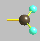 该按钮用于在工作区内从选中的氢原子所处于的方向上连接出一个烯基。 |
|
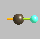 该按钮用于在工作区内从选中的氢原子所处于的方向上连接出一个炔基。 |
|
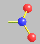 该按钮用于在工作区内从选中的氢原子所处于的方向上连接出一个硝基。 |
|
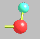 该按钮用于在工作区内从选中的氢原子所处于的方向上连接出一个羟基。 |
|
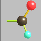 该按钮用于在工作区内从选中的氢原子所处于的方向上连接出一个醛基。 |
|
|
该按钮用于在工作区内从选中的氢原子所处于的方向上连接出一
个卤素原子，当点击该按钮时，会有 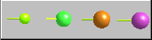 窗体弹出，从左到右依次是氟原子，氯原子，溴原子，碘原子。 |
|
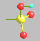 该按钮用于在工作区内从选中的氢原子所处于的方向上连接出一个磺酸基。 |
|
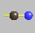 该按钮用于在工作区内从选中的氢原子所处于的方向上连接出一个氰基。 |
|
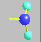 该按钮用于在工作区内从选中的氢原子所处于的方向上连接出一个氨基。 |
|
| 返回 |